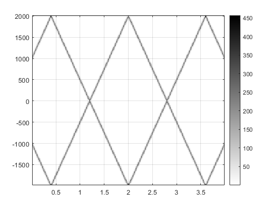

Sampling and Aliasing: Lab S-8: 2.1 Spectrogram for a Chirp that Aliases
Contents
2.1a)
When the frequency continues to rise above half the sampling rate, the frequency aliases backwards, and will continue until it aliases to 0Hz and then will continue to oscillate.
Mu is the half the slope of the change in frequency, so μ = (11,000Hz – 1,000Hz) ÷ (4s – 0s) ÷ 2 = 1,250
F-sub-zero is the starting frequency, so f_0 = 1,000Hz
Phi is the phase offset, which is not defined, so we choose φ = 0.
Chirp formula: cos(ψ(t)) = 2π(1250)t^2 + 2π(1000)t + 0
2.1b)
Here we generate a spectrogram using L_sect as 128
fSamp = 4000; % Hertz dt = 1/fSamp; % seconds tStart = 0; % seconds tStop = 4; % seconds tt = tStart:dt:tStop; fStart = 1000; % Hertz fStop = 11000; % Hertz mu = ((fStop-fStart)/(tStop-tStart))/2; fzero = fStart; % Hertz phi = 0; psi = 2*pi*mu*tt.^2 + 2*pi*fzero*tt + phi; cc = real(7.7*exp(1j*psi)); lSect = 128; % should be a power of 2 %soundsc(cc, fSamp); % plays the sound figure plotspec(cc + 1j*1e-12, fSamp, lSect) colorbar grid on
L_sect represents a certain number of samples. Since the sampling rate is 4000Hz, which is a sampling period of 0.25ms, the T_sect is L_sect times the sampling period (lSect*dt) which is 32ms when L_sect equals 128.
L_sect = 128 samples T_sect = 0.032 s
ans =
Image with properties:
CData: [128×249 double]
CDataMapping: 'scaled'
Use GET to show all properties
 2.1c)
As the frequency reaches half of the sampling frequency, the samples occur at two equal amplitude but opposite sign points in the sinusoid. As the frequency increases to exactly the sampling rate, the samples occur at the same point in the sinusoid at each sample, the the sampled signal appears to not be moving and have a frequency of 0 Hz. This is why the sampled frequency reverses at half the sampling frequency and continues down to 0 Hz. Once the frequency continue above the sampling frequency, the samples are taken slight further ahead in the cycle each time, resulting in a small sampled frequency. This continues to increase until reaching 1.5 times the sampling frequency where it is again sampling opposite amplitudes, but this time a cycle apart instead of within the same cycle. The original effect then occurs and it cycles up and down, never reaching the actual frequency being sampled.